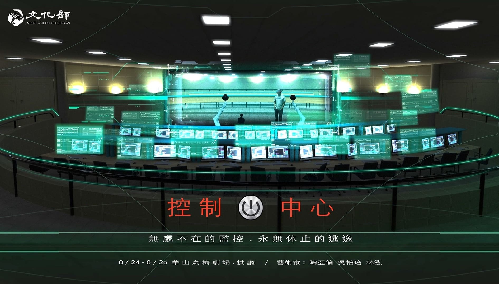
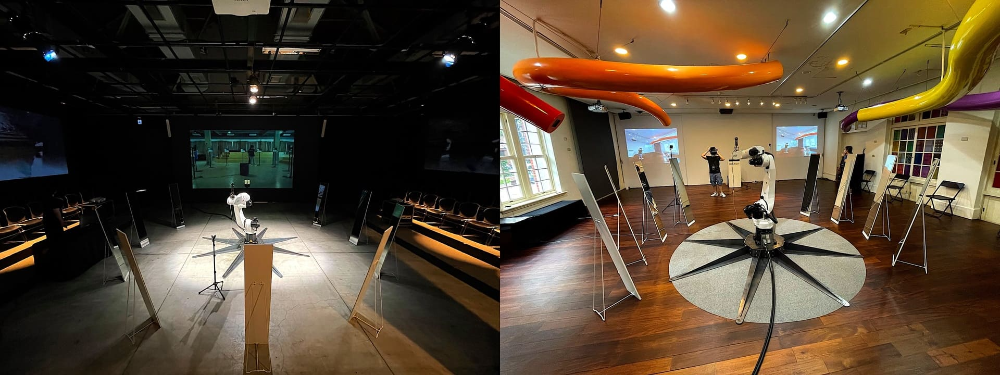
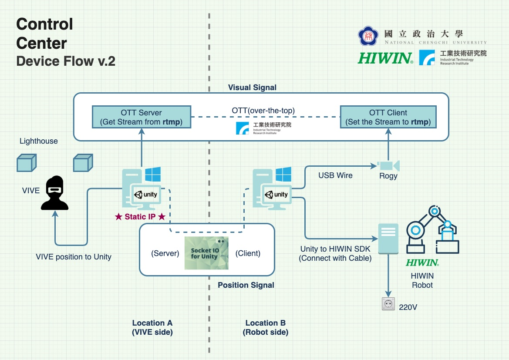
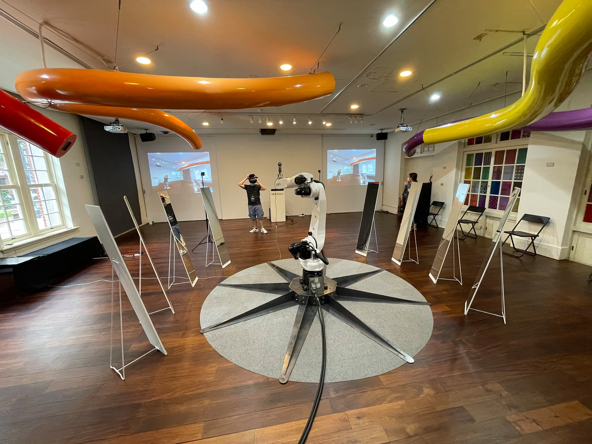

Control Center
Viewers enter a mirrored space as their bodies extend through VR and robotics.
Digital Twin
Telepresence VR
Haptic Robotics
360° Live Capture
Real-Time Streaming
TIME | 2021
AUTHORS | Ya-Lun Tao, Po-Yao Wu, Hung Lin
FUNDED | 2021 Taiwan Ministry of Culture – Technology Art Creation and Development
EXHIBITIONS |
- 2021 Athens Digital Arts Festival – TACTUS | Athens, Greek.
- 2021 Control Center | Umay Theater, Taipei, Taiwan.
- 2021 Arche’ – Architecture of Universe | GAD Giudecca Art District, Venice, Italy.
- 2021 MOCA Taipei – Chrono Contemporary | Taipei, Taiwan.

MOTIVATION |
Control Center examines surveillance, transparency, and the erosion of private freedom in contemporary networked environments. Drawing on the metaphor of a multi-dimensional panopticon, the work reflects how sensors, biometric systems, and ubiquitous data capture turn everyday life into a seamless digital prison—where individuals unknowingly become both observed subjects and self-regulating agents.
The installation creates a doubled architectural space to question what it means to be watched, mirrored, and extended across distance. By collapsing physical and virtual presence, Control Center reveals how control is exercised through visibility, and how the desire for “escape” or private interiority becomes increasingly compromised in an era of constant monitoring.
 APPROACH |
Two identical spaces—located in different cities—are constructed as mirrored environments. Each is equipped with surveillance systems and real-time 360° video streaming. Visitors in Space A wear a VR headset that transmits the live panoramic view of Space B, effectively projecting their consciousness into a remote “twin” environment.
Haptic-enabled robotic devices act as remote prosthetics: virtual hands seen in VR correspond to robotic mechanisms in Space B, allowing the viewer to touch, interact, and physically experience the distant room. The result is a telepresence system where the viewer becomes a remote body—an “avatar” extended across space—while simultaneously occupying a site under constant observation. Through VR embodiment and robotic feedback, Control Center stages a critical encounter between surveillance, agency, and the blurring boundaries of physical identity.

